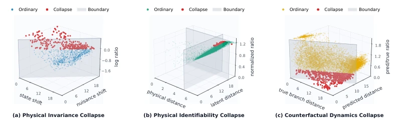
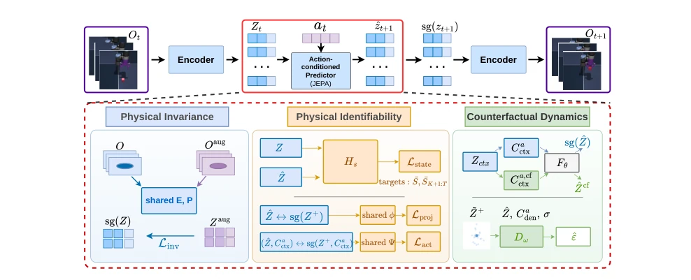
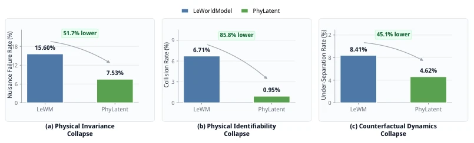
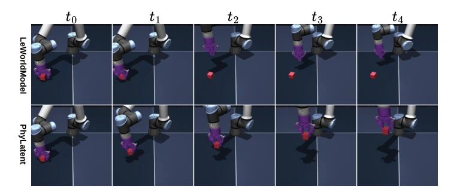

This paper casts a cold shower on JEPA world models: global non-collapse does not equate to good representation. Models such as LeWorldModel, although using SIGReg to support global distributions, frequently fail in physical invariance, state distinguishability, and counterfactual dynamics. PhyLatent acts like a strict physics teacher, forcibly imposing several physical constraints on the latent space. The advantage is that it indeed cures "bloatedness," with planning success rates for Cube and TwoRooms rising sharply; the disadvantage is that it still relies on simulator state labels, remaining distant from true "pure visual self-supervision." For embodied AI pursuing end-to-end learning without sacrificing physical common sense, this counts as a potent remedy, but the side effect is increased training complexity, and the improvement on contact-rich tasks is limited.
研究动机Motivation
JEPA 架构（LeCun, 2022; Assran et al., 2023）通过预测潜在表示而非像素重建来学习世界模型。LeWorldModel（Maes et al., 2026a）引入 SIGReg 防止全局坍塌，但作者发现这不足以保证动态相关的结构。现有方法存在三种坍塌模式：物理不变性坍塌（外观变化导致潜在位移过大）、物理可识别性坍塌（物理状态不同但潜在空间相近）、反事实动态坍塌（不同动作的未来分支在预测中混淆）。这些问题导致 MPC 规划失败。研究动机在于揭示全局非坍塌的局限性，并提出能显式保留物理结构和动作后果的表示学习方法，以支持可靠的具身决策。
The JEPA architecture (LeCun, 2022; Assran et al., 2023) learns world models by predicting latent representations rather than pixel reconstruction. LeWorldModel (Maes et al., 2026a) introduces SIGReg to prevent global collapse, but the authors find this insufficient to guarantee dynamics-related structure. Existing methods exhibit three collapse modes: physical invariance collapse (appearance changes cause excessive latent displacement), physical identifiability collapse (different physical states but similar latent space), and counterfactual dynamics collapse (future branches of different actions are conflated in prediction). These problems lead to MPC planning failure. The research motivation lies in revealing the limitations of global non-collapse and proposing representation learning methods that explicitly retain physical structure and action consequences, to support reliable embodied decision-making.

Figure 2: Three-dimensional diagnostics of dynamics-relevant collapse in LeWorldModel on Cube. Blue, green, and yellow points are ordinary samples; red points satisfy the corresponding collapse criterion. Translucent planes mark the decision boundaries. (a) Physical invariance col- lapse. The horizontal axes are dnuis = ∥zt −zaug t ∥2 and dstate = ∥zt −zt+∆∥2; the vertical axis is rinv = log10((dnuis + ϵ)/(dstate + ϵ)). Red points satisfy dnuis > dstate, equivalently rinv > 0. (b) Physical identifiability collapse. The horizontal axes are dphys = ∥¯si −¯sj∥2 and dlat = ∥zi −zj∥2; the vertical axis is rid = [dphys/(τphys + ϵ)]/[dlat/(τlat + ϵ) + ϵ]. The two boundary planes are dphys = τphys and dlat = τlat; red points satisfy both dphys > τphys and dlat < τlat. (c) Counterfactual dynamics co
PhyLatent incorporates three training paths on the JEPA backbone, sharing the visual encoder and predictor. 1. Physical Invariance: Through Static Visual Invariance Constraint (SVIC), applying brightness and color perturbations to input sequences, forcing the encoder output to remain consistent with the original sequence, suppressing latent displacement caused by appearance noise. 2. Physical Identifiability: Combining Physical State Grounding (PSG) and Future Representation Alignment (FRA). PSG uses normalized simulator state vectors as auxiliary targets, FRA aligns predictions with the real future through a shared projection head and action query module, ensuring physical variables are distinguishable. 3. Counterfactual Dynamics: Utilizing Counterfactual Action Separation Constraint (CASC) and Latent Denoising (LD). CASC forces different action branches to maintain a minimum distance in the latent space by shuffling action sequences, while LD adds noise and performs denoising on predicted futures to regularize local geometric structure. All auxiliary modules are used only during training and removed during inference, keeping the model lightweight.

Figure 3: Overview of the PhyLatent framework. The upper panel shows the shared action- conditioned JEPA backbone for one transition. The current observation ot is encoded into zt and combined with action at by the predictor Fθ to produce ˆzt+1. The next observation ot+1 is pro- cessed by the same visual encoder to provide the stop-gradient target sg(zt+1). In the figure, E denotes the complete visual encoding pipeline, including the projection head P retained explicitly in the equations. The lower panel presents the three PhyLatent training pathways. Physical invari- ance suppresses appearance-induced latent changes; physical identifiability preserves task-relevant physical structure in encoded and predicted representations; and counterfactual dynamics separates futures produced by different
Evaluated on OGBench-Cube, TwoRooms, Reacher, and PushT. The baseline is JEPA + SIGReg. Metrics include the three collapse failure rates and MPC success rate. PhyLatent reduces the three collapse rates on Cube to 7.53%, 0.95%, and 4.62% respectively, with planning success rate increasing from 70.0% to 78.1%. On TwoRooms, it increases to 98.0%. Ablation experiments prove each component is effective. However, on PushT, although the collapse rate decreases, the success rate does not increase, indicating that contact-rich tasks require more fine-grained local dynamics. Results confirm that dynamics-related structure is crucial for planning.

Figure 4: Reduction of dynamics-relevant collapse on Cube. Each panel compares JEPA + SI- GReg and PhyLatent on the same diagnostic set. (a) Physical invariance collapse. (b) Physical identifiability collapse. (c) Counterfactual dynamics collapse. Lower values indicate fewer collapse cases.

Figure 5: Qualitative comparison of MPC execution on Cube. Each row shows five snapshots from t0 to t4. The upper row is JEPA + SIGReg and the lower row is PhyLatent. Both models establish an initial interaction, but JEPA + SIGReg loses contact and leaves the cube behind after t1. PhyLatent maintains the robot–object interaction and transports the cube with the end-effector through the later time steps.